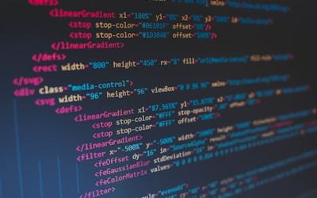

HTML · MULTIMEDIA
Imágenes y video
Los elementos multimedia hacen que una página sea más visual e interesante. En esta sección encontrarás imágenes adaptables y un video con controles.
Galería de imágenes
Cada imagen utiliza el atributo alt para describir su contenido y mejorar la accesibilidad.



Sección de video
Reproduce el video local del proyecto. Utiliza los controles para iniciar, pausar o ajustar el volumen.
Si el video no inicia, asegúrate de abrir la página desde la carpeta completa del proyecto para que pueda encontrar el archivo video.mp4.